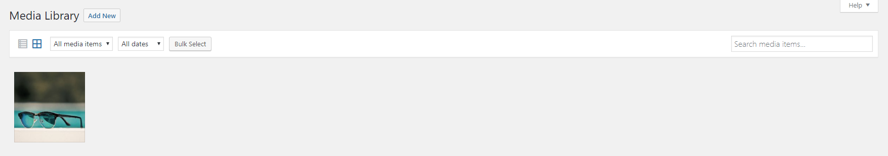

Media Library | Медиафайлы
Данная вкладка отвечает за работу с медифайлами на сайте. Рабочая поверхность имеет стандартный ряд фильтров и переключателей, таких как отображение
всех элементов таблицей / списком, сортировка по типу файлов, сортировка по дате, множественный выбор и поиск.

В работе с медиафайлами существует ряд ограничений и рекомендаций. Рекомендуеся придерживатся их, чтобы избежать поломок на сайте, а
также снижения его скорости работы.
Рекомендации
Данная панель имеет ряд кнопок, каждая из которых перейдет на соответствующую страницу редактирования или настройки*.
Users | Пользователи
Каждой учетной записи присваивается уникальный статус, который отвечает за доступ к определенному функционалу сайта.
На верхнем уровне идет статус administrator / администратор, который имеет доступ абсолютно ко всем функциям и настройкам сайта.
Как правило, этот статус не присваивается обычнм пользователям во избежание нелепых поломок сайта.
Уровнем ниже идет статус editor / редактор, который имеет доступ ко всем основным функциям сайта, но не может делать ряд вещей,
таких как: смена темы сайта, установка / удаление плагинов, изменение системных файлов и т.п.
При необходимости, статусу можно добавить новые или убрать существующие ограничения.
Далее идут статусы author / автор и contributor / участник.
Автор может добавлять новые посты (без возможности) удаления уже существующих.
Учасник же может только просмотреть все посты, без возможности каких либо манипуляций с ними.
На нижнем уровне идет статус subscriber / подписчик, который имеет доступ только к своему профилю на сайте.
Все остыльные возможности для него закрыты. По умолчанию, данный статус присваивается всем новым пользователям, которые регистрируются у Вас на сайте.
При необходимости, если стандартных статусов не хватает и/или есть потребность изменить ограничения статуса, можно добавить ряд других.
Менять статус учетной записи может любой администратор.